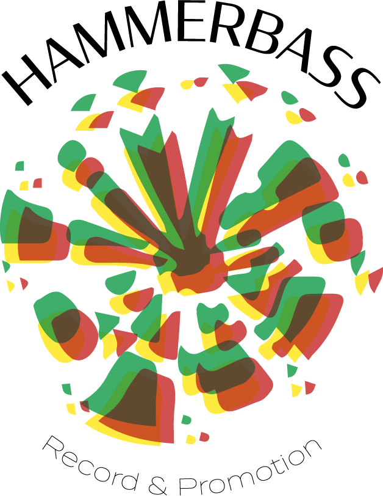

Identité visuelle _
2e année BTS Design Graphique
Le label Hammerbass record & promotion, fondé en 1997 par le collectif DUB ACTION, est l’un des premiers labels français à promouvoir la culture dub. Il souhaite actualiser leur image afin d’acquérir plus de visibilité pour promouvoir au mieux les artistes et la culture qu’il représente.
Format : Numérique
Outils : Illustrator / Photoshop

Application Mobile _
2e année BTS Design Graphique
Le Centre International d’Art et du Paysage de Vassivière est un lieu d’art à échelle humaine. Ce lieu, consacré à la création contemporaine et à l’expérimentation, avait besoin d'un système de cartographie pour guider les visiteurs de l'île.
Format : Numérique
Outils : 3DS Max / Photoshop


Typographie modulaire _
2e année BTS Design Graphique
Conception d’une typographie modulaire à l’aide de formes géométriques simples. Les caractères sont pensés sur une surface en trois dimensions, où la lumière viendrait les éclairer par en haut à droite.
Format : Numérique
Outils : Illustrator / Photoshop

Stay Home, Stay Positive _
Projet personnel entre BTS et DN MADe
Courte animation 3D réalisée dans le cadre d’un projet collectif, visant à encourager les créations graphique tout en remerciant le personnel soignant.
@Stayhomestaypositive